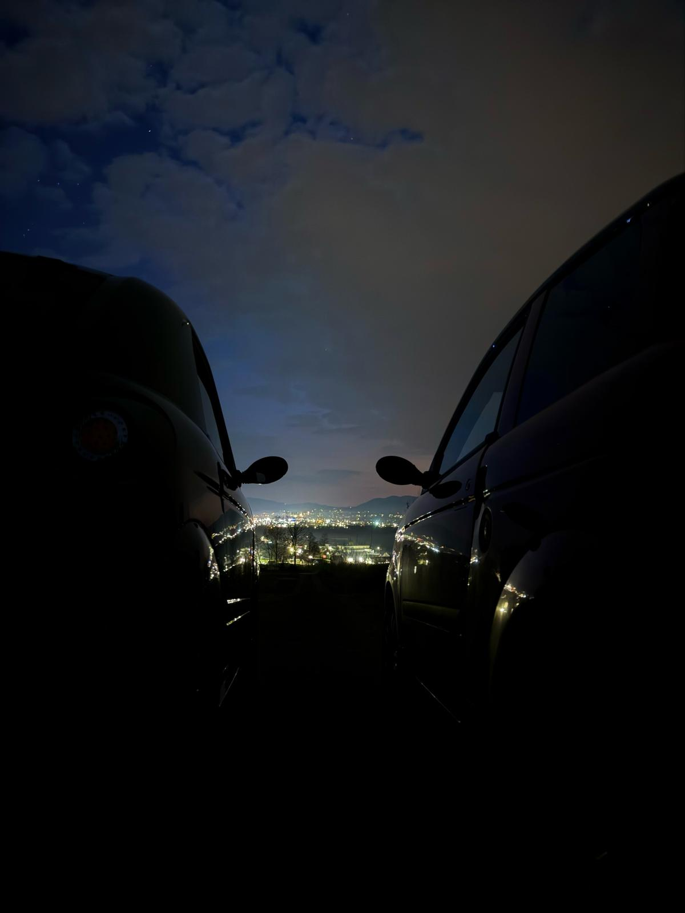

Moim hobby są samochody, a motoryzacja to pasja, która daje mi ogromną radość i pozwala odkrywać świat na nowo. Samochody to coś więcej niż tylko środek transportu – to maszyny pełne technologii, mocy i designu, które fascynują mnie od zawsze.
Interesuję się różnymi typami pojazdów – od miejskich aut, przez samochody sportowe, po duże SUV-y czy luksusowe limuzyny. Każdy z nich ma swoje unikalne cechy, które sprawiają, że motoryzacja jest tak różnorodna i ciekawa. Współczesne samochody pełne są nowoczesnych rozwiązań, takich jak systemy bezpieczeństwa, asystenci kierowcy czy napęd elektryczny, który jest coraz bardziej popularny i przyjazny dla środowiska.

Powrót do strony głównej...